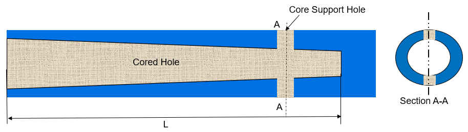
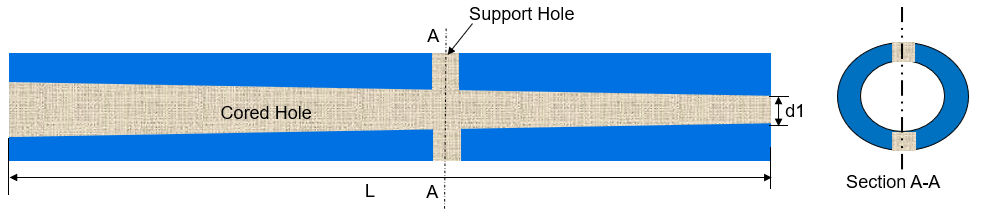
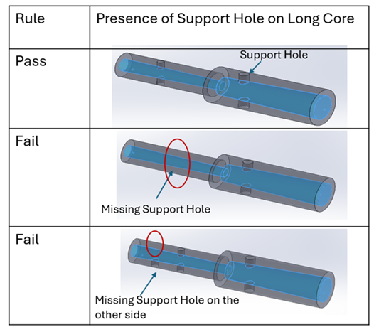
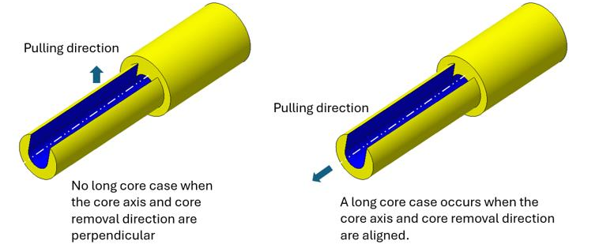

中子穴の長さ／直径比が構成された値を超えており、かつインターロック形状が利用できない場合、このルールはコアの反対側にサポート穴が存在するかどうかをチェックします。
長く、かつ支持されていないコアのたわみは、成形プロセスで一般的に発生する問題です。高い成形圧力のため、長いコアは特にたわみやすく、その結果としてコア周辺でフラッシュが発生する問題につながる可能性があります。この問題を緩和するには、コア同士の間に十分なインターロック（かみ合わせ）が確保されていることが重要です。このインターロックは、成形中にコアを安定させ、不要なたわみを防ぐのに役立ちます。インターロック形状の作成が現実的でない場合の代替策として、コアの反対側にコアサポート穴を追加する方法があります。これらのサポート穴は追加の安定性を与え、コアが十分に支持された状態を保つことで、たわみのリスクを最小化します。このアプローチにより成形プロセスの健全性を維持し、コア周辺のフラッシュのような欠陥の発生を低減できます。
一般的なガイドラインとして、長いコアを効果的に支持し、コアのたわみ問題を防ぐために、長いコアの反対側にサポート穴を設けることが推奨されます。
止まり中子穴

貫通中子穴

ここでは、
L = 全長
d1 = 中子穴の最小直径
注記：
長いコア上に存在する穴は、サポート穴として扱われます。
以下の種類の穴がサポート対象となります：
単純穴
テーパ穴（ドラフト付き）
皿もみ穴（カウンターシンク）
座ぐり穴（カウンターボア）
このルールは、長いコア上に存在するすべての穴をサポート穴として検証します.

止まり穴、ねじ穴、部分穴は、コアサポート穴とは見なされません。
コア軸とコアの抜き方向が一致している場合、長いコアとして扱われます.
